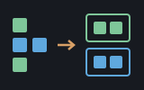

seq is the workhorse toolbox for the structure of
lists: test every element, find where something lives, take the first few,
stitch two lists together, and so on. It's the pile of everyday verbs you
reach for the moment you have more than one of something. None of it is
built into the language — every word here is written in plain
Shoddy on top of a handful of built-in building blocks (Fold,
Map, Filter, and the trio
First/Rest/Prepend that take a list
apart and put it back together). Pure and self-hosted: nothing here touches a
file or the screen, so the same input always gives the same answer, and you
can read the whole machine like a recipe book. (Two things that used to live
here have better homes now: totalling and averaging belong to
stats.shoddy, and sorting became the built-in
Sort, which needs no Include at all.)
The list this machine walks was invented twice in two years, a few
hundred miles apart. In 1956 Allen Newell, Cliff Shaw and Herbert Simon,
building a program to prove logic theorems, needed a data structure that
could grow and shrink mid-computation — something no array could do
— and hit on chaining: each item holds a value and the address of the
next. John McCarthy took the idea into Lisp in 1958 and gave it its lasting
form, the two-field cell whose famous accessors, car and
cdr, are fossilised register names of the IBM 704 he built
it on. What made the cons cell immortal is the property this whole library
leans on: a list is either empty, or an item in front of a smaller list
— a definition that is already a recursion scheme. First, Rest,
Prepend; every word in seq is a sentence built from that
three-word vocabulary, and Fold is the observation, half a
century old now, that almost all of the sentences are the same one.
Almost every program ends up juggling a bunch of values at once — a list
of scores, a row of prices, the words in a sentence, the students in a class.
The language gives you the raw ability to loop over them, but writing the
same little loop by hand every time (to count how many are over the line, to
grab the first three, to walk two lists in step) gets old fast, and every
hand-written loop is a fresh chance to get an off-by-one wrong.
seq hands you those loops already written, named, and tested, so
you can say what you mean — CountIf(students, passed),
Taken(prices, 3), Zip(names, scores) —
instead of spelling out how. It's also the quiet foundation a great many
other machines are built on: when another machine needs to search, slice, or
zip a list, it leans on seq rather than reinventing it.
One thing worth knowing up front: Shoddy has two flavours of sequence, the
List (grown from front to back with
First/Rest/Prepend) and the
Array (a fixed block you index into). Some words here are
poly — they work happily on either kind, because they
only ever ask a sequence to fold or map over itself. The predicates
(Any, All, CountIf,
Contains) are all poly. The rest — searching, slicing,
and pairing — are List-only, because they
take the sequence apart with structural recursion, and that's a List's trick,
not an Array's. The Word Reference below labels which is which.
Include the file and the words are yours. Most of them take a list as
their first argument; the ones that test each element (like Any,
All, CountIf) take a little function too —
often written inline as a Fn lambda, or as a partially-applied
operator like >(4) (read "greater than 4").
Include "seq.shoddy"
Def Main()
Let xs = { 5, 3, 8, 1, 9, 2 }
Print(CountIf(xs, >(4))) ' 3 (5, 8, 9)
Print(Any(xs, =(8))) ' True
Print(Contains(xs, 7)) ' False
Let top3 = Taken(Sort(xs), 3) ' Sort is a builtin
Each(top3, Fn(n) => Print(Str(n))) ' 1, then 2, then 3
Print(IndexOf(xs, 8)) ' 3 (8 is the 3rd item)
Let names = { "ADA", "LIN", "GRACE" }
Each(Zip(names, xs), Fn(pr) => Print(Fst(pr) & " = " & Str(Snd(pr))))
' ADA = 5, LIN = 3, GRACE = 8A few things worth remembering:
Append and
Taken hand you back a brand-new list and leave the original
untouched. Chain them freely — Taken(Sort(xs), 3) sorts a
copy (with the Sort builtin), then takes three from that.IndexOf returns
1 for the first item, and 0 when the value isn't in
the list at all — a "not found" signal that at least cannot be mistaken
for a real position. IndexFrom does the same but lets you start
the search partway along. IndexOpt asks the same question and
answers it in the language rather than in a number you have to remember:
Some(3) or None.Last reaches for a final element, so an empty list has no
sensible answer to give it.Zip and
ZipWith pair items up position by position and stop when either
list runs out — three names against six numbers gives three pairs, as
in the example.Because it's the common vocabulary of lists, seq shows up
underneath a lot of other machines — anywhere a machine needs to
search, filter, or slice, it tends to Include this one rather
than roll its own.
The nineteen sequence and higher-order words the runtime dispatches — not defined here, documented here
These are not seq's Defs. The engine dispatches
them, and a Def whose name is a builtin is refused. They are
listed on this page because seq is the sequences machine and
everything it declares is written over them, and they need no
Include. The same nineteen are documented in
machines/seq.shoddy's own header block.
Two sequence kinds, and the difference is the whole design.
A List is a linked list: First and
Rest are free, Nth walks. An Array
is contiguous: Nth is O(1), and Rest would have to
copy. Recurse over lists; index into arrays; ToArray and
ToList convert. Everything here counts from 1, and all nineteen
are pure — including SetNth, which answers a new
sequence and leaves the original alone.
| Word | Description |
|---|---|
| Map(xs, f) | Every element through f. Poly: an
array maps to an array. |
| Filter(xs, p) | The elements p answers True for, in
order. |
| Fold(xs, init, f) | Left fold: the accumulator starts at
init and f sees it first. Almost every word in the
reference below is Fold underneath. |
| Each(xs, f) | f applied to every element for its
effect, answering nothing. The one word in this group that exists
only for impure work. |
| Times(n, f) | f applied to 1, 2, … n,
for effect. The counted loop. |
| Range(lo, hi) | The whole numbers from lo to
hi inclusive. An empty list when hi is below
lo, so a loop over an empty range simply does nothing. |
| Word | Description |
|---|---|
| Length(xs) | How many elements. List and array
only — it refuses a string outright, which is why
str's Len is a separate word and not a
near miss for this one. |
| IsEmpty(xs) | Whether it holds nothing. |
| First(xs) | The first element. Aborts on an empty sequence. |
| Rest(xs) | Everything after the first. Lists only: on an array it would have to copy, and the point of an array is that it does not. |
| Nth(xs, k) | The k-th element, counting from 1.
Aborts outside the range. O(1) on an array, a walk on a list. |
| Word | Description |
|---|---|
| Prepend(v, xs) | xs with v on the
front. Lists only, and free — this is the pair to
First/Rest that structural recursion is written
with. |
| SetNth(xs, k, v) | A sequence with its k-th element
replaced. The original is unchanged. Aborts outside the
range. |
| Reverse(xs) | The same elements, back to front. |
| Concat(xs, ys) | The two joined. Append and
Flatten below are written over it. |
| Sort(xs) | Ascending, over all-numbers or all-strings. Mixed kinds have no order and are refused. It is a sequence operation and so it is documented here, though stats is its heaviest caller — every median, quantile and rank goes through it. |
| Dim(n, init) | An Array of n copies
of init. The way an array is made, since there is no array
literal. |
| ToArray(xs) / ToList(arr) | Between the two kinds. The usual
shape is: build with list recursion, ToArray once, then
index. |
Every word, plus the Pair type
| Word | Description |
|---|---|
| Any(xs, p) | True if the test p holds for at least
one item in xs. False for an empty list. |
| All(xs, p) | True if the test p holds for every
item in xs. True for an empty list (nothing fails it). |
| CountIf(xs, p) | How many items in xs pass the
test p. |
| Contains(xs, v) | True if the value v appears
somewhere in xs. |
| Word | Description |
|---|---|
| IndexOf(xs, v) | The 1-based position of the first
v in xs, or 0 if it isn't
there. |
| IndexFrom(xs, v, k) | Like IndexOf, but treats the
front of xs as position k — the building
block IndexOf is written on, useful directly when you want to
number from something other than 1. |
| IndexOpt(xs, v) | The same search, returning
Some(position) or None. The honest form, and the
one to reach for in new code; Option is the language's, so
matching on it needs no further Include. IndexOf
keeps its 0 because too much already reads it. |
| Word | Description |
|---|---|
| Taken(xs, n) | A new list of the first n items of
xs. If xs is shorter, you get all of it; if
n is zero or less, you get an empty list. |
| DropN(xs, n) | A new list with the first n items of
xs removed. Drop more than there are and you get an empty
list. |
| Append(xs, x) | A new list that is xs with
x tacked on the end. |
| Last(xs) | The final item of xs. Needs a
non-empty list. |
| Flatten(xss) | Takes a list of lists and joins them end to end into one flat list. |
| Word | Description |
|---|---|
| Pair | A two-value bundle with fields Fst and
Snd — what Zip hands back for each matched-up
couple. |
| Zip(xs, ys) | Pairs up xs and ys
position by position into a list of Pairs, stopping when the
shorter list runs out. |
| ZipWith(xs, ys, f) | Like Zip, but instead of
making pairs it calls f on each matched couple and collects the
results. Zip is just ZipWith with
Pair as the combiner. |
| User | How | |
|---|---|---|
| alg | Flatten is the whole of expansion and variable collection, All and Any carry the invariants, Append and Taken build the coefficient lists, and IndexOf looks up a binding. | |
| bool | CountIf is BoolPopCount and scores the greedy cover, Contains and Append dedupe the implicant sets by value, Flatten collects each combining round, and All/Any carry the tautology and coverage tests. | |
| csv | Zip pairs a row with its header, IndexOf finds a
named column, and All and Append carry the scanner. | |
| cuttle | Pair carries a stack cell's record case, and the list plumbing implements the stack and its shuffles. | |
 | demographics | Taken
previews the loaded rows in the trainer. |
 | devils-dust | All
compares knob settings, CountIf takes the wool census,
Taken caps the wisp trails. |
| dict | Any
answers the has-key question over the pair list. | |
| eng | Append builds the prime-factor and quotient lists, CountIf is Euler's totient, and ZipWith is the dot product. | |
| fin | Flatten expands a cash-flow list; Taken walks the
running cash position. | |
| geo | Last, Taken and DropN close a polygon
and split a coordinate's numbers; Pair carries the furthest
candidate through the Douglas–Peucker search. | |
| halifax | Contains reads the shell-word tables, DropN takes the last rows for the tape pane, and Append builds the lines a turn shows. | |
| html | Contains tests a tag against the void and raw-text sets. | |
| https | Append accumulates the reply as fragments, so a drained body
is joined once rather than copied per chunk. | |
 | invaders | Any
asks the fleet questions — anyone left, anyone hit? |
 | iris | Taken
previews the data, ZipWith pairs truth with prediction for the
confusion matrix. |
| json | Zip pairs keys with values, and All checks a document
before it is written. | |
| lin | Append accumulates the characteristic polynomial's coefficients and the eigenvalues a scan finds; DropN trims the leading term. | |
| matrix | Flatten
and ZipWith build matrices from rows and stitch vectors
together. | |
| mip | Any checks the integer list against the variables that exist. | |
| mps | Contains tests a row name against the sections already seen, and IndexOf turns a name into the column it stands for. | |
 | mungo-caverns | Contains
in fourteen files — vocabulary, inventory and state are all list
membership — plus Append, Any, All,
Flatten, Last and CountIf. |
| neural | ZipWith walks a layer's weights against its inputs. | |
 | pac-vt100 | Any,
Contains and Flatten — the maze and ghost
questions. |
| plotter | Zip pairs the series, Taken trims it to the axis,
and Any and CountIf decide the ticks. | |
| reckoner | List plumbing throughout the tokenizer, the evaluator's walk, and the combinators' folding. | |
| scribbler | List
chores in the event layer (Last). | |
| shaker | Pair
carries the two halves of a Feistel block; All and
Last check the field and read the tag. | |
 | simplex-from-mps | Contains
reads the command-line flags. |
| sparky | Filter and Length count the words a sparky session has defined, for its load report. | |
 | sinq | Pair carries a decorated element through the sort, Contains is what the set words ask, and Append, Last and Flatten do the rest. seq is the only machine sinq stands on, which is what lets anything take sinq without dragging a tree in behind it. |
| sparse | All checks a column's shape, Flatten gathers its entries, and Pair holds them while they are sorted into columns. | |
| stats | CountIf,
Flatten and ZipWith under the summaries. | |
 | tally | Contains, Append, Flatten and Zip thread through the derive, filter and report stages. |
| weather-glass | Taken cuts the feed to 72
hours, and the render accumulates its lines with Prepend. | |
| xml | Zip and Append build the attribute list;
Any and All walk the tree. |
None — seq is the trunk. It stands on the list builtins alone, which is why half the library can lean on it without dragging anything else in.